15
Writing Libraries
Sooner or later you will create something really good that you think other people could make use of. This is the time to wrap up the code in a library and release it to the world. This chapter shows you how.

When to Make a Library
Creating an Arduino library is not an activity restricted to Arduino developers; any Arduino user can create a library. If it’s useful, then much praise will flow in the developer’s direction. No one sells libraries—that would be counter to the values of the Arduino community. Libraries should be released as open source as a way to help your fellow Arduino enthusiasts.
Perhaps the most useful Arduino libraries are those that are developed to provide an interface to a specific piece of hardware. They often greatly simplify the process of using the hardware and, in particular, unraveling some complex protocol. There is no reason why more than one person should have to go through the pain of working out how some obscure bit of hardware works, and thanks to the Internet, if you publish a helpful library, people will generally find it.
TIP The application programmer interface (API) is the set of functions that the library user will include in his or her sketch. When designing the API, always ask yourself this question: “What does the user actually care about?” The low-level implementation details should be hidden as much as possible. In the example developed in “Library Example (TEA5767 Radio),” I’ll discuss this issue further.
Using Classes and Methods
Although the sketch writer generally has the impression that he or she is writing in C and using a fairly conservative set of C features, in actual fact, the sketch writer is using C++. Arduino sketches are based on C++, the object-oriented extension to the C language. This language uses the concepts of classes of objects that group together information about the object (its data) and also functions that apply to the data. These functions look like regular functions but when associated with a particular class are referred to as methods. What is more, methods can be declared to be public, in which case anyone can use them, or private, in which case they are only accessible to other methods inside the class.
The reason I am telling you all this is that extension writing is one of the few Arduino activities in which using classes is the norm. The class is a great way to wrap up everything into a kind of module. The “private”/“public” distinction is also a good way to ensure that when you are designing the API, you are always thinking of how the sketch writer will want to interact with the library (the public) rather than how it works (the private).
As you work through the example that follows, you’ll see how to use a class.
Library Example (TEA5767 Radio)
To illustrate how to write an Arduino Library, I’ll wrap up some code that you first met back in Chapter 7 for the TEA5767 FM radio receiver. The sketch is simple and barely justifies a library, but nonetheless, it serves as a good example.
The following are the stages in the process:
1. Define the API.
2. Write the header file.
3. Write the implementation file.
4. Write the keywords file.
5. Make some examples.
In terms of files and folders, a library comprises a folder, whose name should match the name of the library class. In this case, I’ll call the library and class TEA5767Radio. Within that folder, there should be two files: TEA5767Radio.h and TEA5767Radio.cpp.
Optionally, you may also have a file named keywords.txt and a folder called examples, containing example sketches that use the library. The folder structure for this example library is shown in Figure 15-1.
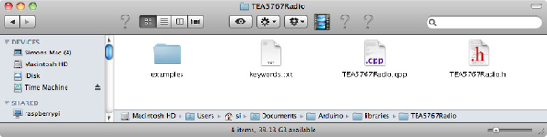
Figure 15-1 Folder structure of the example project
Probably the easiest way to work on the library is directly in your Arduino libraries folder, where you have been installing other third-party libraries. You can edit the files directly in this folder. The Arduino IDE will only register that the library exists once you restart it, but after that any changes to the contents of the files will be picked up automatically when you compile the project.
You can see the original sketch on which this library is based in sketch_07_01_I2C_TEA5767, and you can download the finished library from http://playground.arduino.cc//Main/TEA5767Radio.
Define the API
The first step is to define the interface that people will use.
If you have used a few libraries, you’ve probably noticed that they generally follow one of two patterns. The simplest is exemplified by the Narcoleptic library. To use this library, you simply include the library and then access its methods by prefixing the method name with Narcoleptic, as shown here:
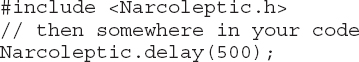
This pattern is also used in the Serial library. If there will only ever be one of the things that the library represents, then this pattern is the right one to use. However, if it is possible that there will be more than one, then you want to use a different approach. Because you might want to have more than one radio receiver attached to an Arduino at a time, this particular example falls into this second category.
For these situations, the pattern is similar to that used in the Software-Serial library. Because you might have lots of soft-serial ports at the same time, you create named instances of the SoftwareSerial library using a syntax like this:
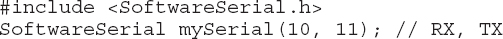
When you want to use that particular serial port (the one using pins 10 and 11), you create a name for it—in this instance, “mySerial”—and then you can then write things like the following:
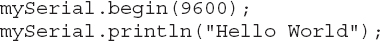
Without worrying about how you will write the code, let’s define how you would like to be able to use the code in a sketch.
After importing the library, you want to be able to create a new “radio,” name it, and specify which I2C address it runs on. To make life really easy, you have two options: one where it defaults to the normal port of 0x60 and a second where you specify the port:
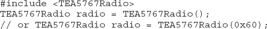
Because this is an FM radio, what you really need to do is set the frequency, so you need to write something like this in your code.
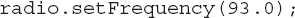
The number here is the frequency in MHz. It is in the form that the sketch writer would like it in, not in the strange unsigned int format that is sent to the module. You want to hide the hard work and wrap it up in the library.
That’s all there is to the design in this case. Now we’ll write some code.
Write the Header File
The code for a library is split across more than one file—generally just two files. One file is called the “header” file and has the extension “.h.” This file is the one you reference from your sketch using #include. The header file does not contain any actual program code; it simply defines the names of the classes and methods in the library. Here is the header file for the example library:
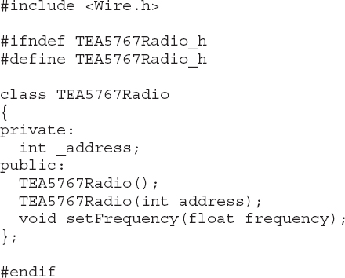
The #ifndef command prevents the library from being imported more than once and is standard practice for header files.
You then include the class definition, which has a private section just containing a variable called _address. This variable contains the I2C address for the device.
The public section contains the two functions for creating a radio object—one that allows an address to be specified and one that does not and will, therefore, use the default. The setFrequncy function is also listed as public.
Write the Implementation File
The code that actually implements the functions defined in the header file is contained in the file TEA5767Radio.cpp:
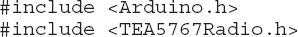
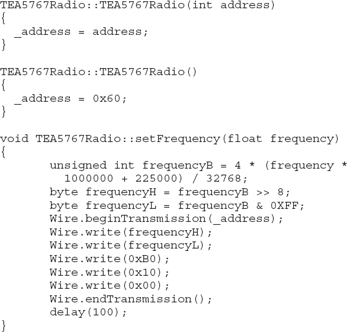
The two methods responsible for creating a new radio both simply set the value of _address to either the default I2C address of 0x60 or the “address” parameter supplied. The setFrequency method is almost identical to the original sketch (sketch_07_01_I2C_TEA5767), except that the following line uses the value of the _address variable to make the I2C connection:
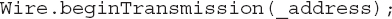
Write the Keywords File
The folder containing the library should also contain a file called keywords.txt. This file is not essential; the library will still work if you do not create this file. The file allows the Arduino IDE to color-code any keywords for the library. Our example library only has two keywords: the name of the library itself (TEA5767Radio) and setFrequency. The keyword file for the library can contain comments on lines that start with a #. The keyword file for this library is shown here:
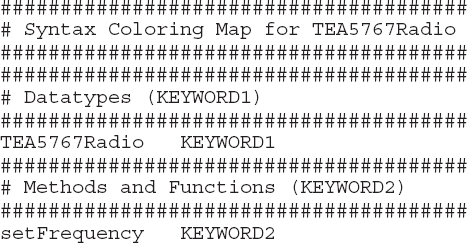
The keywords should be specified as KEYWORD1 or KEYWORD2, although version 1.4 of the Arduino IDE colors both levels of keyword as orange.
Make the Examples Folder
If you create a folder named examples within the folder for the library, then any sketches in the folder will automatically be registered by the Arduino IDE when it starts, so you can access them from the Examples menu under the name of the library. The examples sketch can just be a regular sketch, but one that is saved in the folder for the library. The example using this library is listed here:
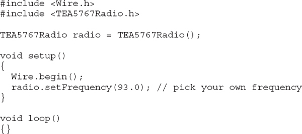
Testing the Library
To test the library, you can just run the example sketch that uses the library. Unless you are very lucky (or careful), the library will not work the first time you compile it, so read the error messages that appear in the information area at the bottom of the Arduino IDE.
Releasing the Library
Having created a library, you need to release it to the community. Perhaps the best way to make sure that people find it is to create an entry on the publicly editable wiki at http://playground.arduino.cc//Main/LibraryList. You can also host the zip file here, although some people prefer to host the library on GitHub, Google Code, or some other hosting platform, and then they just place a link to the code on the wiki.
If you want to upload your library to the Arduino Playground, follow these steps:
1. Test the library to make sure it works as expected.
2. Create a zip file of the library folder and give it the same name as the library class with an extension of .zip.
3. Register yourself as a user on www.arduino.cc.
4. Add an entry on the Arduino Playground wiki—http://playground.arduino.cc//Main/LibraryList—that describes the library and explains how to use it. The easiest way to do this is look at an entry for another library and copy the appropriate bit of wiki markup. Create a link using, for example, [[TEA5767Radio]] to set a placeholder for a new page that will appear on the library list with a “?” next to it. Clicking the link will create the new page and open the wiki editor. Copy and adapt the wiki code from another library (perhaps from “TEA5767Radio”).
5. To upload the zip file of the library, you need to include a tab like this in the wiki markup: Attach:TEA5767Radio.zip. After the page has been saved, clicking the download link allows you to specify a zip file to upload onto the wiki server.
Summary
Creating a library can be very rewarding. Before creating one, however, always search in case someone else has already created the library for you.
The nature of a book like this is that, inevitably, it cannot cover everything that the reader wants to know. But I do hope it has helped you with some of the more common advanced Arduino programming topics.
You can follow me on Twitter as @simonmonk2, and you will find more information about this book and my other books on my website at www.simonmonk.org.